Aktuálna ponuka
Nehnuteľnosti, ktoré ponúkam
16 nehnuteľností na predaj a prenájom. Vyberte typ, alebo napíšte lokalitu.
16 z 16 ponúk
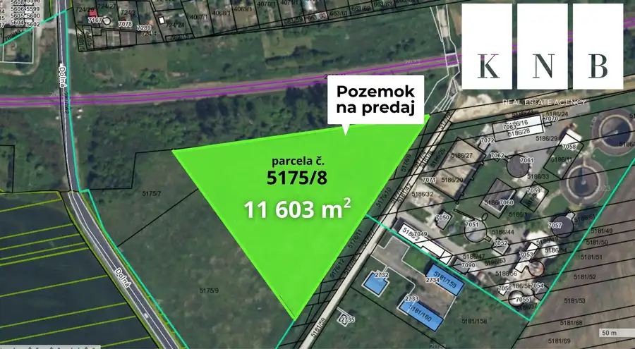
PozemokNové6 1 160 000 €Predaj stavebného pozemku 11 603 m² v meste Šaľa Šaľa 11603 m² Realitná kancelária KNB - Komerčné Nehnuteľnosti Bratislava ponúka na predaj stavebný pozemok na komerčné využitie situovaný v priemyselnej zóne v…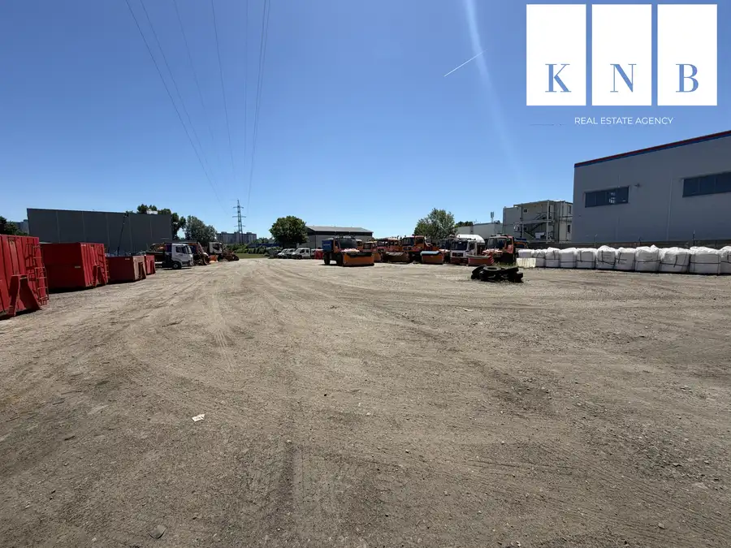
Pozemok10 1 850 000 €Stavebný pozemok 5510 m² na predaj pri ulici Panónska cesta v meste Bratislava Petržalka, Bratislava 5510 m² Realitná kancelária KNB - Komerčné Nehnuteľnosti Bratislava ponúka na predaj stavebný pozemok, ktorý je situovaný pri frekventovanej ulici Panónska…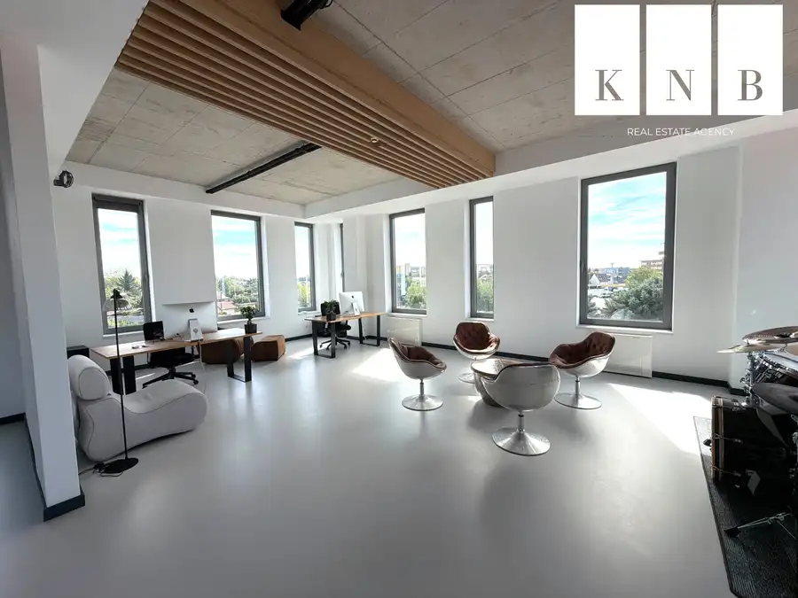
Komerčné priestory10 4 500 €Prenájom samostatného a zariadeného kancelárskeho traktu 330 m² v skvelej lokalite pri Rožňavskej ulici – Bratislava, Nové Mesto Nové Mesto, Bratislava 1 m² Realitná kancelária KNB - Komerčné Nehnuteľnosti Bratislava ponúka na prenájom moderné, nadštandardne upravené a kompletne zariadené kancelárske…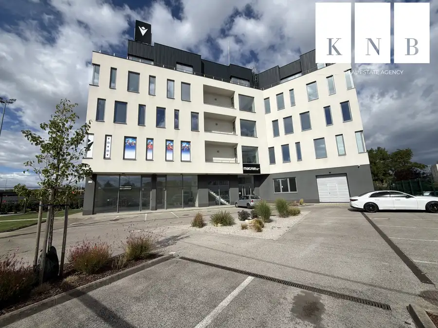
Komerčné priestory10 3 800 €Prenájom samostatného kancelárskeho traktu 274 m² v skvelej lokalite pri Rožňavskej ulici – Bratislava, Nové Mesto Nové Mesto, Bratislava 1 m² Realitná kancelária KNB - Komerčné Nehnuteľnosti Bratislava ponúka na prenájom moderné kancelárske priestory o celkovej výmere 274 m², ktoré sú…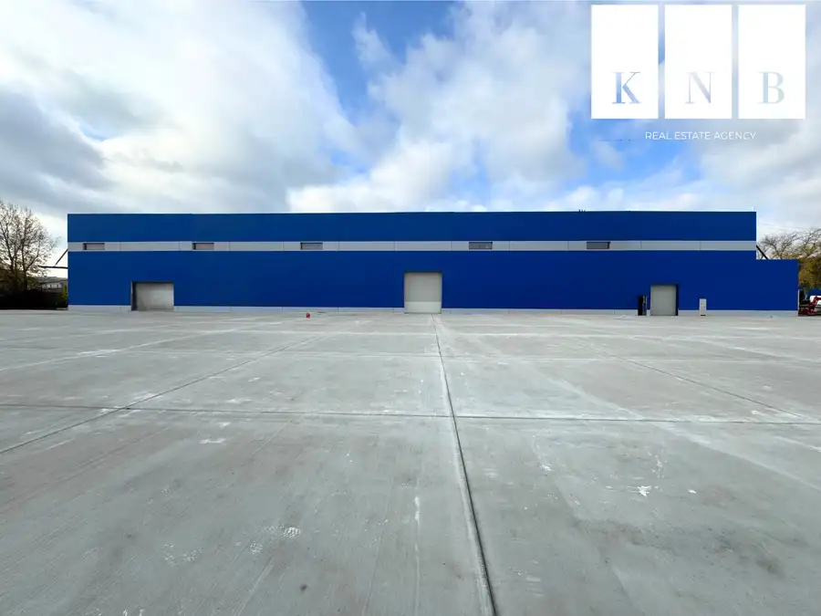
Komerčné priestoryNové10 Cena dohodouPrenájom skladového priestoru 1081 m² v meste Bratislava Rača, Bratislava 1 m² Realitná kancelária KNB - Komerčné Nehnuteľnosti Bratislava ponúka na prenájom skladový priestor o celkovej úžitkovej ploche 1081 m² na ulici…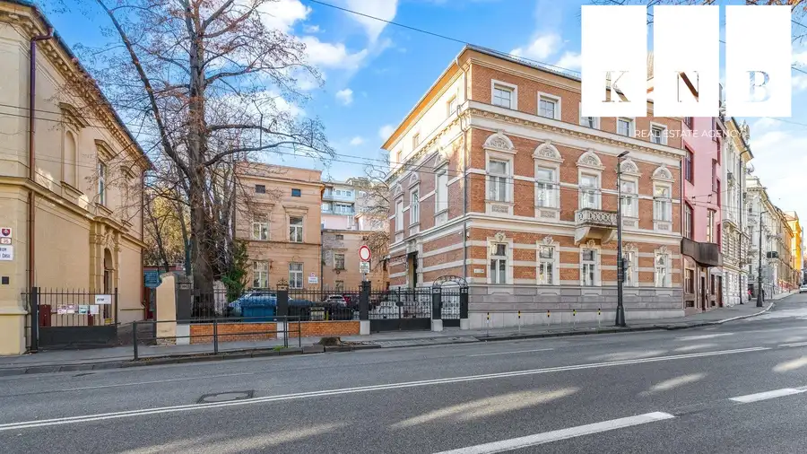
Komerčné priestoryNové10 Cena dohodouPredaj exkluzívnej a kompletne zrekonštruovanej historickej budovy na Štefánikovej ulici v meste Bratislava Staré Mesto, Bratislava 1 m² Ponúkame na predaj skutočne výnimočnú a luxusnú kompletne zrekonštruovanú historickú budovu, ktorá sa nachádza priamo na ulici Štefánikova v centre…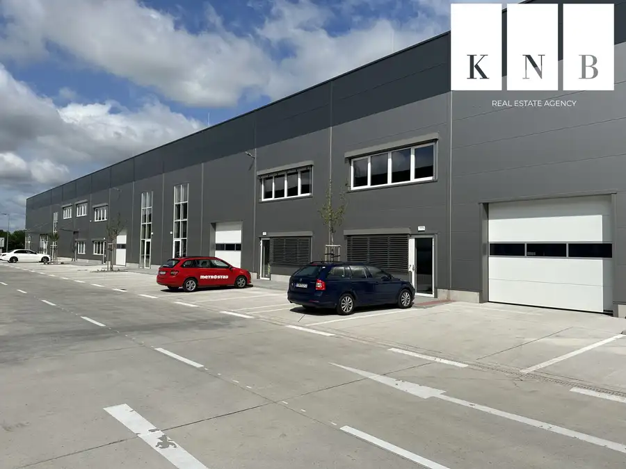
Komerčné priestory10 Cena dohodouPrenájom obchodno-skladového priestoru 404 m² s modernými kanceláriami 128 m² – Bratislava, Bory Devínska Nová Ves, Bratislava 1 m² Realitná kancelária KNB - Komerčné Nehnuteľnosti Bratislava ponúka na prenájom obchodno-skladový priestor o celkovej úžitkovej ploche 532 m², ktorý…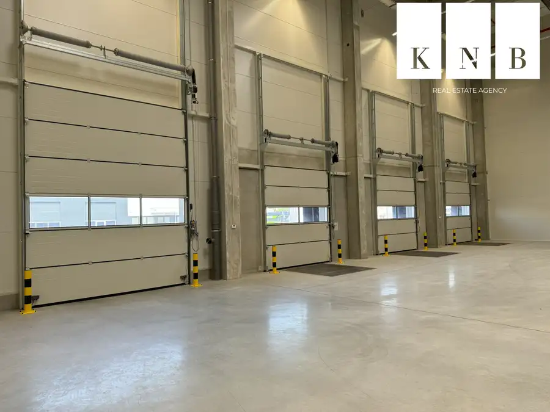
Komerčné priestory10 Cena dohodouPrenájom nového skladového priestoru 1879 m² vrátane kancelárii priamo v meste Bratislava Rača, Bratislava 1879 m² Realitná kancelária KNB - Komerčné Nehnuteľnosti Bratislava ponúka na prenájom novo postavený skladový priestor o úžitkovej ploche 1879 m², ktorý je…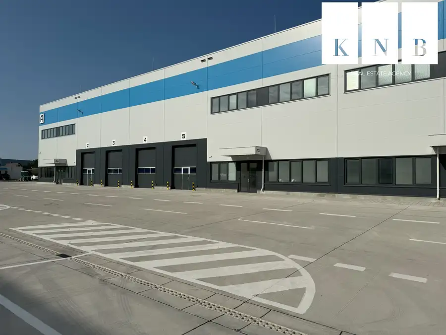
Komerčné priestory10 Cena dohodouPrenájom 3 nových skladov od 800 m² vrátane kancelárií priamo v meste Bratislava Rača, Bratislava 800 m² Realitná kancelária KNB - Komerčné Nehnuteľnosti Bratislava ponúka na prenájom 3 novopostavené skladové priestory, ktoré sú situované v areáli v…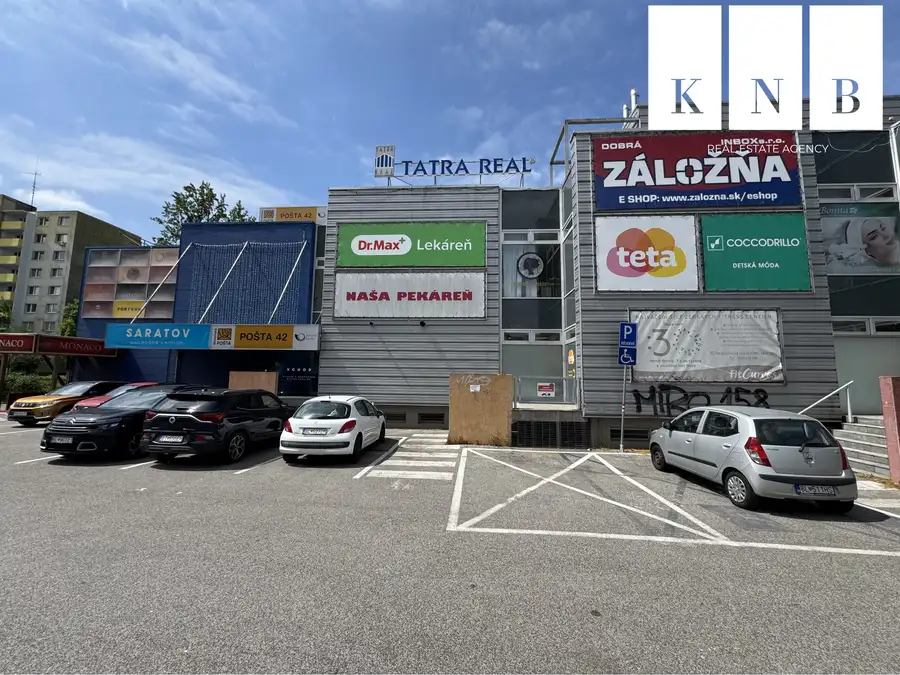
Komerčné priestory8 Cena dohodouPrenájom obchodno-prevádzkového priestoru 594 m² v OD Saratov II v meste Bratislava, časti Dúbravka Dúbravka, Bratislava 1 m² Realitná kancelária KNB - Komerčné Nehnuteľnosti Bratislava ponúka na prenájom samostatný obchodno-prevádzkový priestor o úžitkovej ploche 594 m2 v…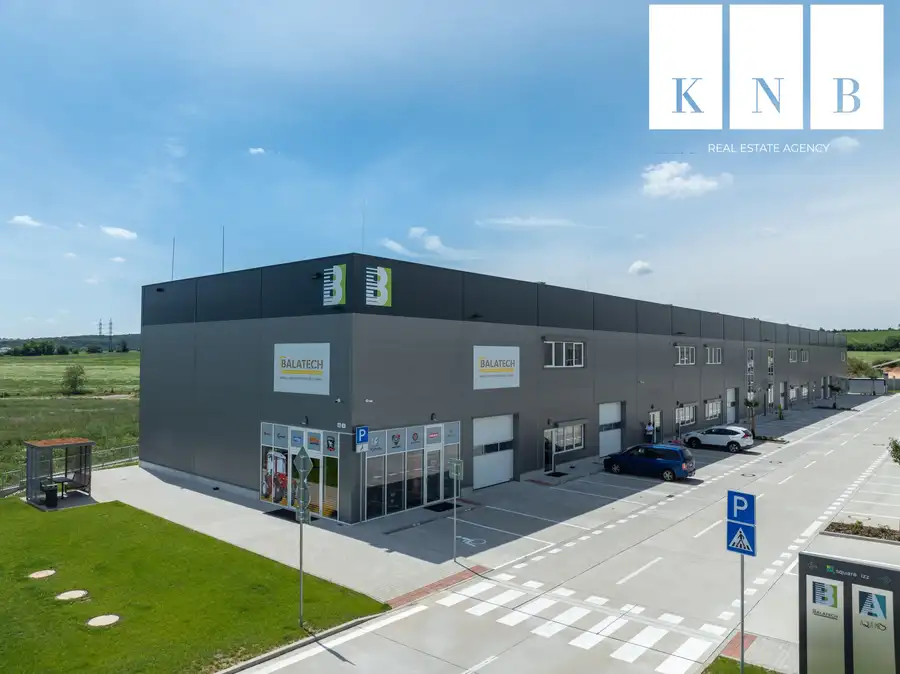
Komerčné priestory10 Cena dohodouPrenájom priestoru Obchod, Sklad, Kancelária pod jednou strechou od 470 m² s tepelnými čerpadlami v meste Nitra Lužianky 1 m² Realitná kancelária KNB - Komerčné Nehnuteľnosti Bratislava ponúka na prenájom nový, moderný a nízkoenergetický obchodno-skladový priestor s…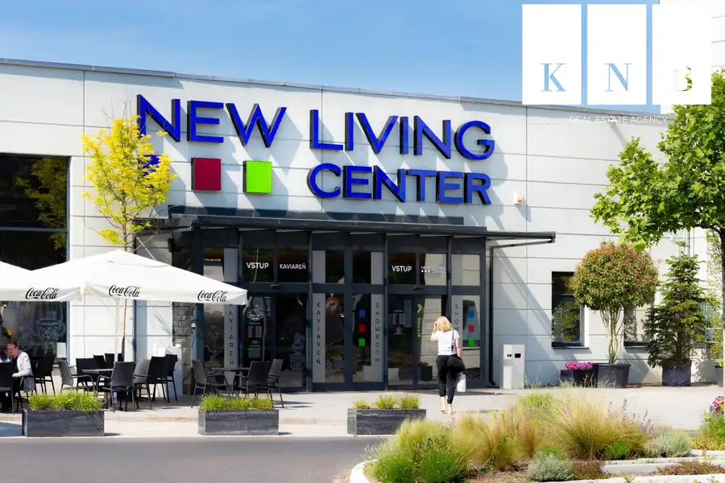
Komerčné priestory10 Cena dohodouPrenájom showroomu 213 m² v obchodnom centre NEW LIVING CENTER v meste Bratislava Ružinov, Bratislava 1 m² Realitná kancelária KNB - Komerčné Nehnuteľnosti Bratislava ponúka na prenájom showroomový priestor o výmere 213 m2, ktorý je situovaný v tesnej…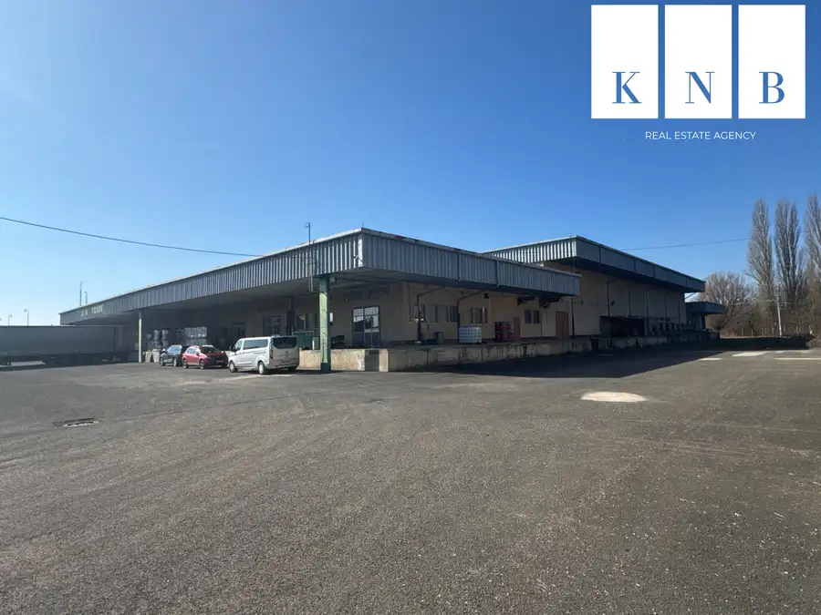
Komerčné priestory10 Cena dohodouPredaj logistického areálu colného skladu 23 400 m² s koľajovou prípojkou v blízkosti prekladiska Čierna nad Tisou Pribeník 1 m² Realitná kancelária KNB - Komerčné Nehnuteľnosti Bratislava ponúka na predaj dlhodobo vyťažený logistický areál s koľajovou prípojkou, ktorý v…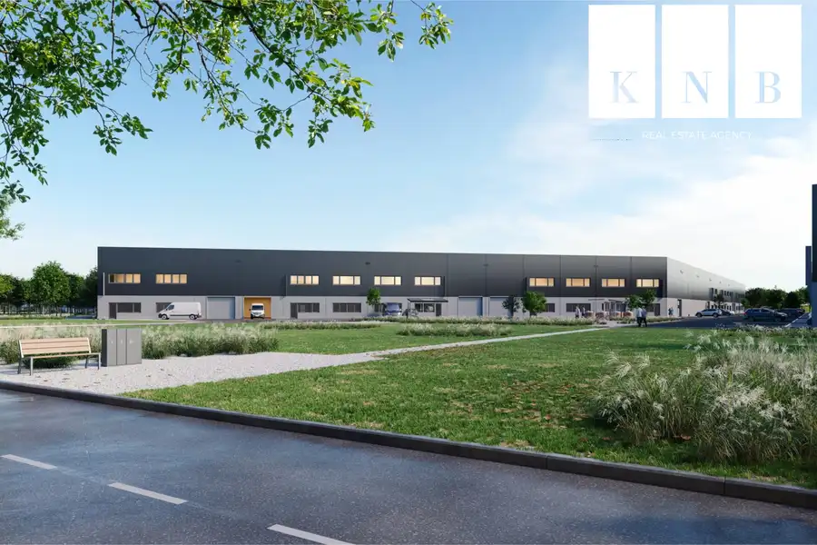
Komerčné priestory10 Cena dohodouPrenájom priestoru od 450 m² v kombinácii SKLAD, SHOWROOM, KANCELÁRIA s tepelnými čerpadlami v meste Bratislava Rača, Bratislava 1 m² Realitná kancelária KNB - Komerčné Nehnuteľnosti Bratislava ponúka na prenájom budúci moderný a nízkoenergetický obchodno-skladový priestor už od 450…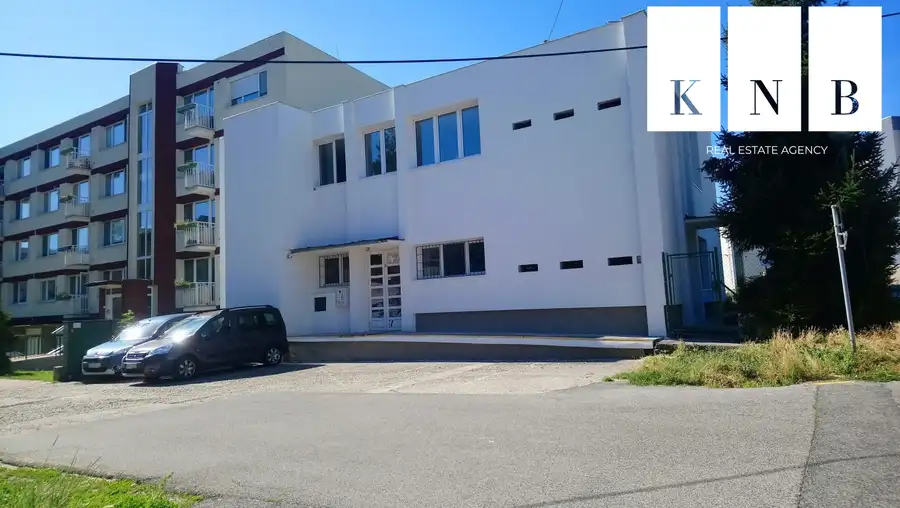
Komerčné priestory10 Cena dohodouObjekt na predaj 332,5 m² pre účely podnikania v meste Bratislava, časť Vrakuňa Vrakuňa, Bratislava 332.5 m² Realitná kancelária KNB - Komerčné Nehnuteľnosti Bratislava ponúka na predaj samostatne stojací komerčný 2 podlažný objekt o čistej vnútornej…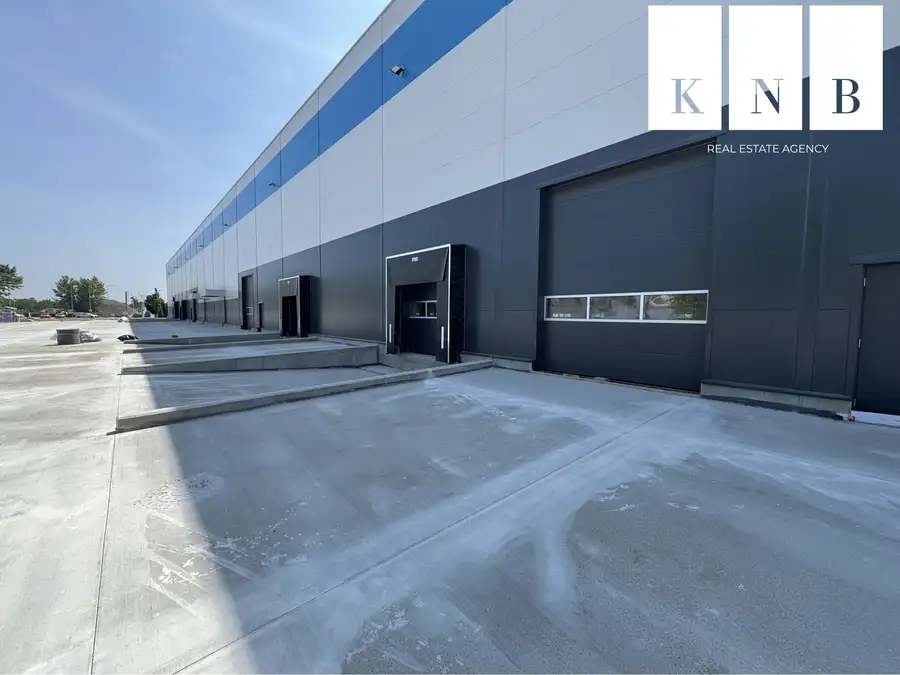
Komerčné priestory10 Cena dohodouPrenájom nových skladových priestorov v meste Senec Senec 1 m² Realitná kancelária KNB - Komerčné Nehnuteľnosti Bratislava ponúka na prenájom novopostavené skladové priestory, ktoré sú situované na Nitrianskej…Tomuto výberu zatiaľ nezodpovedá žiadna ponuka. Napíšte mi, čo hľadáte.